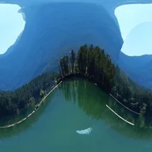

Zmiana orientacji sfery 360°

Obraca warstwę panoramy 360° wewnątrz jej sfery, aby wyrównać horyzont lub zmienić miejsce przodu.
Ustawienia
| Ustawienie | Typ | Zakres | Domyślnie |
|---|---|---|---|
| Odchylenie | Kąt | Od -3600° do 3600° | 0° |
| Pochylenie | Kąt | Od -3600° do 3600° | 0° |
| Przechył | Kąt | Od -3600° do 3600° | 0° |